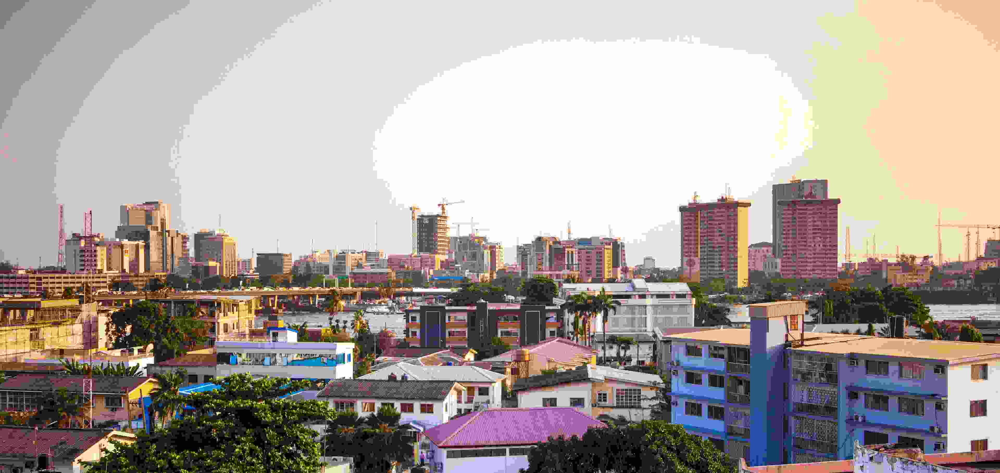

Lagos is the largest city in Nigeria and one of the fastest-growing cities in Africa. It is a major financial center and is known for its vibrant culture, nightlife, and coastal beauty.
From the bustling markets of Balogun to the beaches of Tarkwa Bay and the skyscrapers of Victoria Island, Lagos offers a mix of tradition and modern development. It is truly the heart of innovation and energy in Nigeria.
